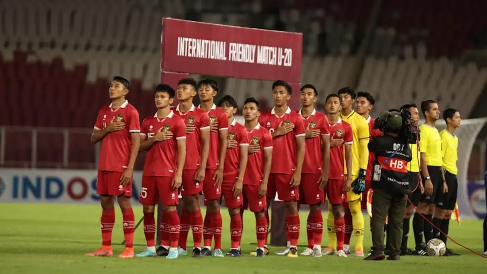

RESMI: Indonesia BATAL Jadi Tuan Rumah Piala Dunia U-20, Terancam Sanksi
APA YANG TERJADI? Indonesia dipastikan tidak akan menggelar Piala Dunia U-20 2023 setelah FIFA resmi membatalkan status Indonesia sebagai tuan rumah. Keputusan ini dikeluarkan otoritas tertinggi sepakbola dunia itu di tengah gejolak penolakan terhadap Israel sebagai salah satu peserta turnamen.
APA KATA FIFA: "Menyusul pertemuan hari ini antara Presiden FIFA, Gianni Infantino dan Presiden Persatuan Sepakbola Seluruh Indonesia [PSSI], Erick Thohir, FIFA telah memutuskan, karena keadaan saat ini, untuk mencoret Indonesia sebagai tuan rumah," tulis FIFA melalui keterangan resmi, Rabu (29/3).
TERANCAM SANKSI: Tak cuma membatalkan status Indonesia sebagai tuan rumah, FIFA juga menyinggung soal adanya potensi sanksi yang bisa diterima oleh Skuad Garuda selain juga akan memilih tuan rumah pengganti dalam waktu dekat. "Tuan rumah baru akan diumumkan sesegera mungkin, dengan jadwal turnamen saat ini tetap tidak berubah. Potensi sanksi terhadap PSSI juga dapat diputuskan pada tahap selanjutnya," tulis mereka.